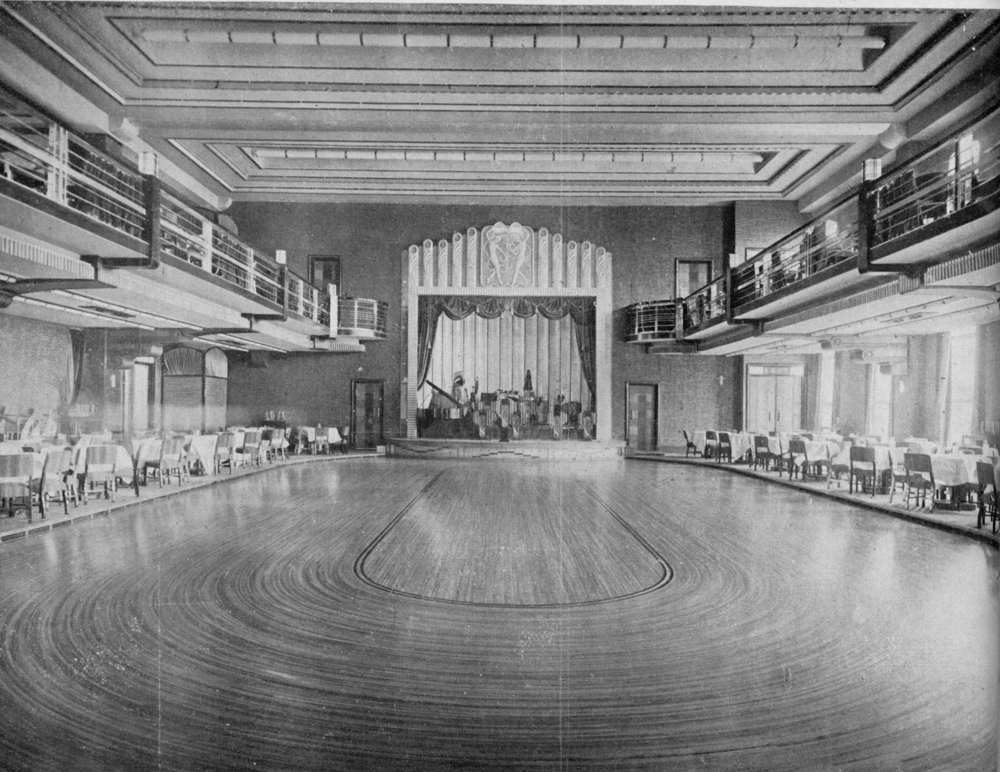
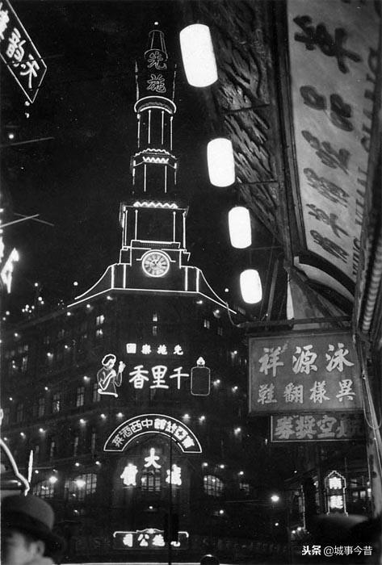
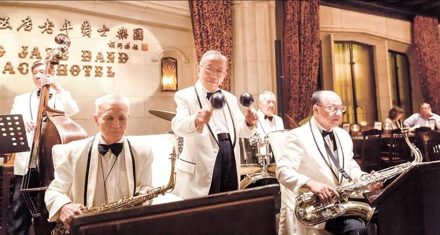
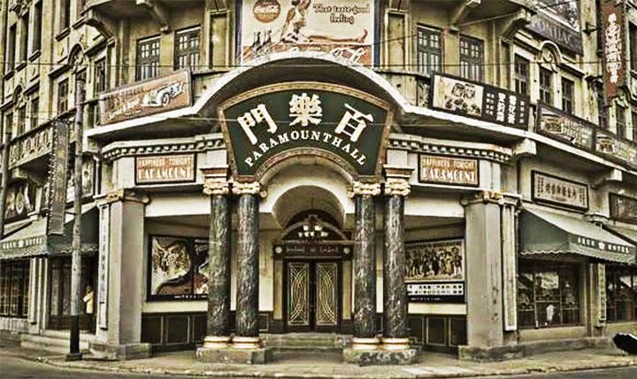
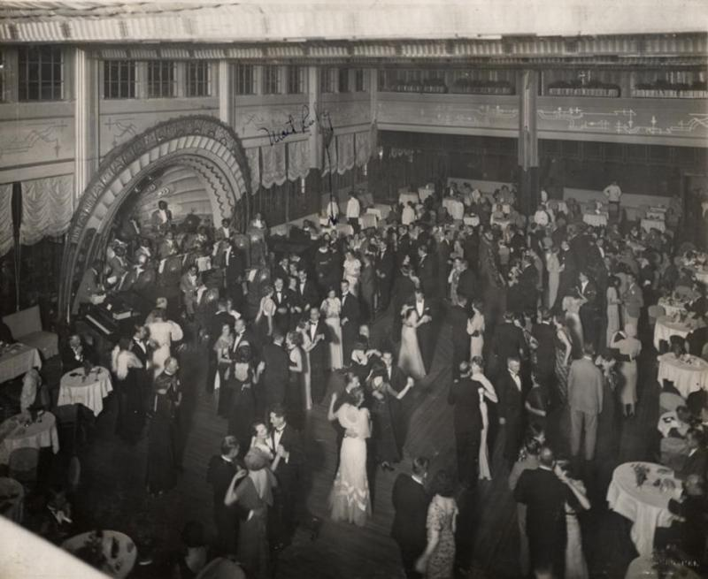
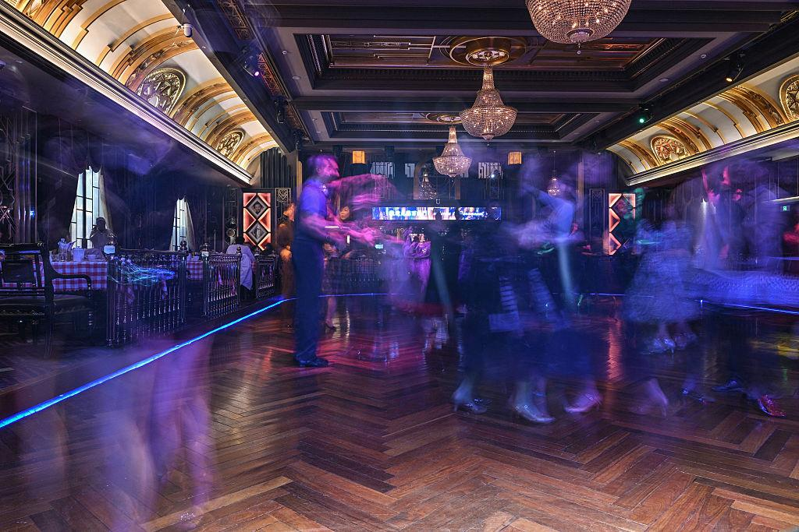

Example 2 — A Nightclub in Shanghai
The car drops you near the Bund, neon reflecting off wet pavement. Inside, the club is louder than expected—brass, drums, laughter in three languages at once.
Shanghai isn’t like Paris. It’s layered.
At one table: British businessmen in tuxedos.At another: Chinese elites in tailored suits.Across the room: Russian émigrés, still carrying fragments of another life.
The band plays jazz—but not quite. The rhythm bends, melodies slipping between Western scales and something older, local. You can’t place it, but it works.
A hostess leans in, smiling, practiced. Everything here feels transactional, but also electric.
Outside, you know, there are political tensions building—warlords, foreign concessions, rising nationalism. But inside, for now, it’s all speed and light and money.
It feels like the future. And also like it might collapse at any moment.